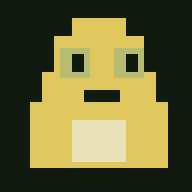

0
奶蛙
00:00
¤ 0击败 0
Deepseek
一个脑子不太够用的入侵者
奶蛙大战 ai。
三位首领 · 三层领域 · 随机异变
每层固定 6 间 · 无法回头
样本 01 / 奶蛙点击试试状态：没在思考
WASD 移动 / SPACE 冲刺 / E 大笑 NO THOUGHTS. JUST SPIT.
选择下一次麻烦
✦ 战斗♛ 精英≈ 泉水¤ 商店? 自动奇遇
长出一点可能性
房间清空。选一项强化。
强化的效果可以相互配合 · 每个战斗房领取一次
≈
生命上限加成持续整局，可叠加。事件在进入时自动触发。挑战型奇遇需要先完成战斗。
先喘一口气
蛙先缓缓。
这里的时间停下了。
+0 奶币
一点点聪明，留到下一次
0奶脑
让手指找到舒服的位置
操作设置
拖动三个控件，调整位置
摇杆
大笑键
冲刺键
移动：WASD / 方向键点按键按钮后，按新的键。
手机布局与键位保存在本设备。
少想一点，多躲一点
深入三位 ai 的领域。
移动 / 冲刺
WASD 或方向键移动，自动瞄准可见敌人。冲刺穿越敌群；书架、服务器会挡住普通口水。
大笑 / 奶蛋
大笑清除近身弹幕，奶蛋向外展开，各自释放范围伤害。奶蛋的碰撞伤害可以穿墙；等待预警出现，再决定冲刺时机。
强化 / 奇遇
击杀自动得金币和经验，升级只加基础属性。清房选强化，商店可购买和刷新。奇遇进入即触发。
奶币 / 奶脑
结算表现转化为奶币。两阶段奶脑、六种超级天赋可选，每阶段只能选择一种。成长保存在本设备。
简单 1 层、中等 2 层、困难 3 层，每层固定经过 6 间。Deepseek、Claude、Astra 各有可预判的多阶段攻击。击碎首领场景装置可制造破绽，星光射线可借掩体躲避。暂停后可暂退保存，下次从主页继续。手机需要横屏，触控布局可在设置中拖动调整。
大笑音源：准备中 · 音源出处

把实验室装进口袋
奶蛙，住进主屏幕。
添加到主屏幕后，从图标打开独立游戏窗口。
iPhone / iPad
用 Safari 打开游戏 → 点“分享” →“添加到主屏幕” → 若有“作为网页 App 打开”，请开启 → 添加。
Android / 电脑
点击下方“安装应用”。若浏览器未提供安装弹窗，请在浏览器菜单中选择“安装应用”或“添加到主屏幕”。
离线实验室正在检查离线资源…
离线资源准备完成后，可断网打开和游玩。奶脑、操作设置和暂存进度保存在当前设备；游戏中更新会先保存进度。
请横屏游玩
把手机横过来，进入奶蛙的世界。